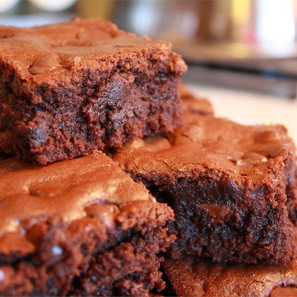

Image courtesy of allrecipes.com
Brownies
I am fairly certain my husband married me so that I would keep making him these brownies. I regret ever making them, because now he simply won't accept a
boxed brownie mix. Make at your own risk.
Ingredients
- 10 Tbsp unsalted butter
- 250 g granulated sugar
- 80 g unsweetened cocoa powder
- 0.25 tsp salt
- 1 tsp vanilla
- 2 large eggs
- 65 g all purpose flour
- up to 75 g chocolate chips (optional)
Steps
- Preheat oven to 325 F
- Line the bottom of an 8 in square pan with tin foil. Grease and flour the sides of the pan.
- Combine butter, salt, sugar, and cocoa in a medium saucepan over medium heat. Melt together until the mixture is slightly simmering. Do not let
the mixture come to a boil.
- Let the mixture cool for 5 minutes, then mix in the vanilla.
- Add the eggs one at a time, whisking on high after each one. Batter should be very thick and shiny after both eggs are added.
- Stir in the flour with a spatula, and then beat the mixture for 3-5 minutes with the spatula. Batter should still be thick and shiny.
- Add in chocolate chips.
- Bake for 25-30 minutes, or until a toothpick inserted in the middle comes out almost clean.